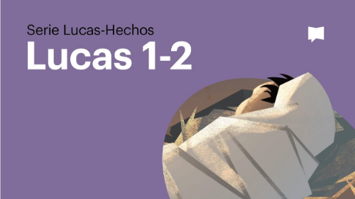
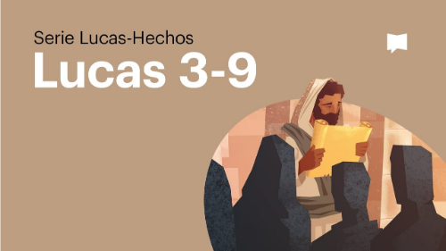
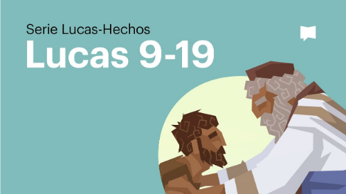
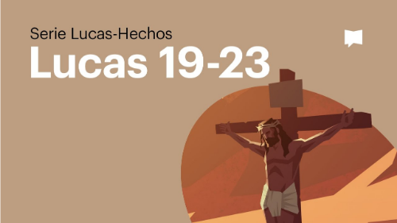
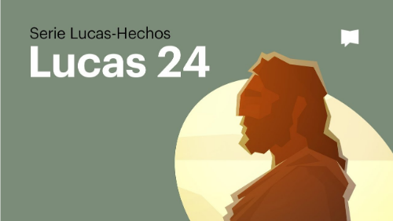
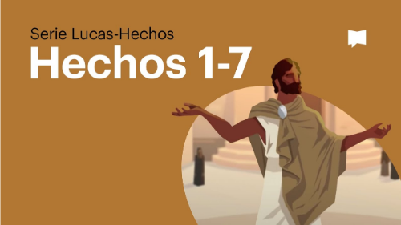
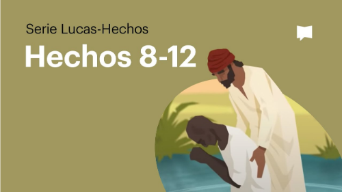
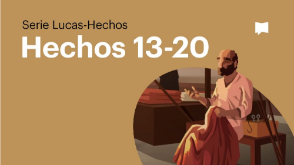
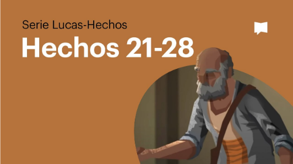

LUCAS-HECHOS

El Nacimiento De Jesús Evangelio De Lucas-1-2

Evangelio De Lucas-3-9

Evangelio De Lucas-9-19

Evangelio De Lucas-19-23

Evangelio De Lucas-24
Evangelio Según Marcos

Hechos 1-7

Hechos 8-12

Hechos 13-20

Hechos 21-28